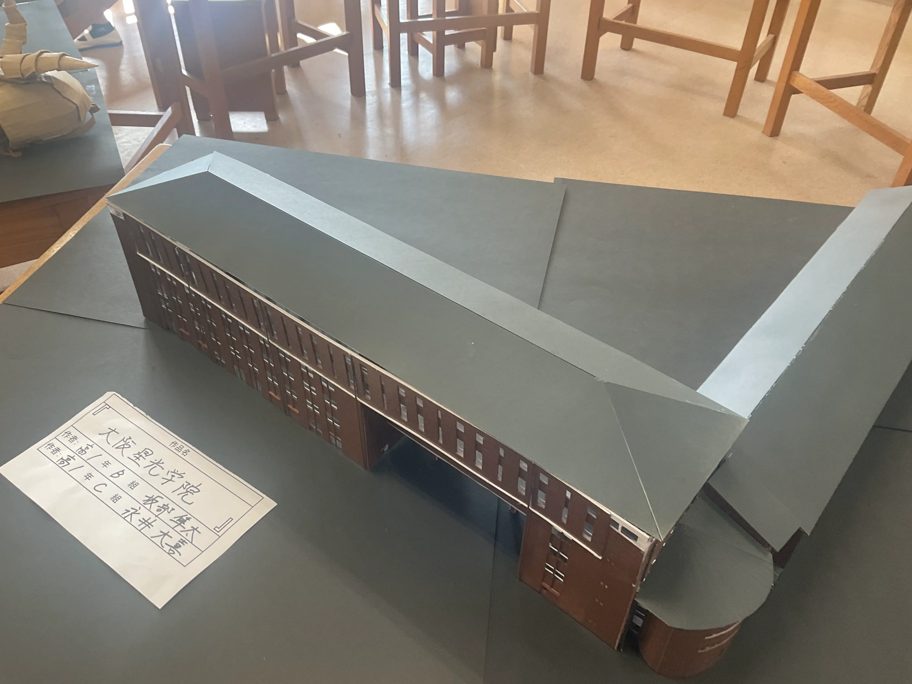

あと???日
Latest News
| 6/6 | お知らせお知らせお知らせ |
| 5/30 | お知らせお知らせお知らせ |
| 5/27 | お知らせお知らせお知らせ |
| 《全てのお知らせをみる》 | |
|---|---|
Introduction
What is "SF"?

SFの説明を記入してください。SFの説明を記入してください。SFの説明を記入してください。SFの説明を記入してください。
SFの説明を記入してください。SFの説明を記入してください。SFの説明を記入してください。SFの説明を記入してください。
SFの説明を記入してください。SFの説明を記入してください。SFの説明を記入してください。SFの説明を記入してください。
What is "Seiko"?

星光の説明を記入してください。星光の説明を記入してください。星光の説明を記入してください。星光の説明を記入してください。
星光の説明を記入してください。星光の説明を記入してください。星光の説明を記入してください。星光の説明を記入してください。
星光の説明を記入してください。星光の説明を記入してください。星光の説明を記入してください。星光の説明を記入してください。